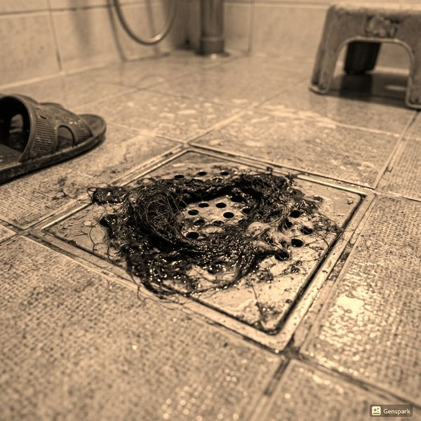
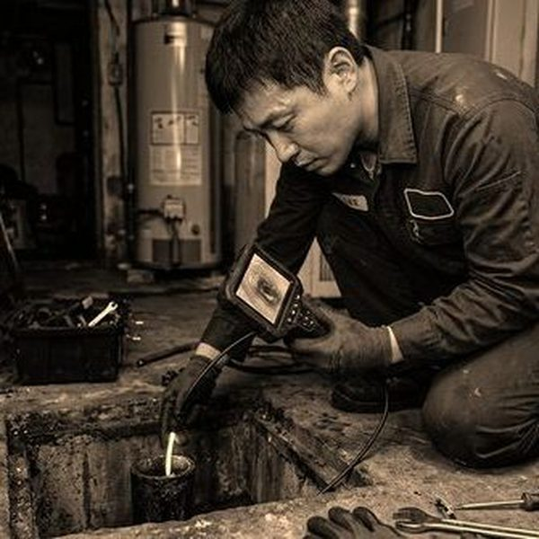
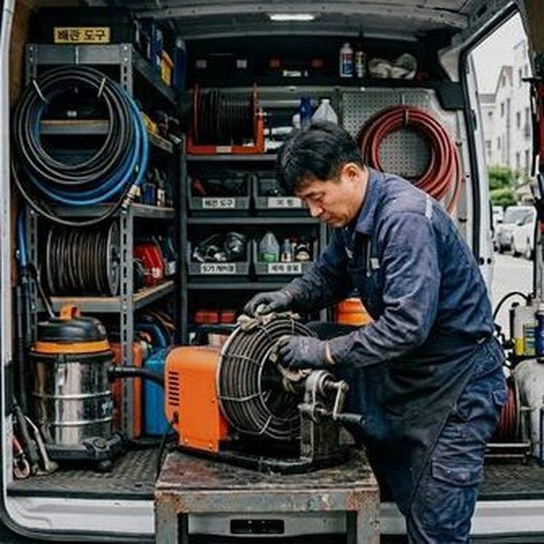

보일러실 배관 관리의 중요성
보일러실과 기계실은 급수, 난방, 온수 배관이 집중되어 있어 문제 발생 시 건물 전체에 영향을 미칩니다. 배관 노후로 인한 누수, 밸브 고장, 보온재 탈락 등은 에너지 효율 저하와 동파 위험으로 이어집니다. 특히 겨울철 보일러실 난방 배관의 보온재가 벗겨진 상태에서 한파가 오면 동파 사고가 발생합니다. 또한 배관의 녹물이나 스케일이 보일러 열교환기를 막으면 난방 효율이 크게 떨어지고 보일러 수명도 단축됩니다. 제우스시설관리는 보일러실 배관 전문 점검 서비스를 제공하며, 문제를 사전에 발견하여 대규모 사고를 예방합니다.

배관 점검 주기와 체크리스트
보일러실 배관은 월 1회 육안 점검, 분기 1회 전문 점검, 연 1회 종합 정비를 권장합니다. 월간 점검에서는 배관 연결부의 누수, 밸브 작동 상태, 압력 게이지 수치, 보온재 상태를 확인합니다. 분기 점검에서는 배관 내부 세척, 밸브 그리싱, 안전장치 테스트를 실시합니다. 연간 종합 정비에서는 배관 두께 측정(초음파), 내부 스케일 제거, 방청 처리, 보온재 교체를 진행합니다. 제우스시설관리는 내시경 카메라와 관로탐지기를 활용한 정밀 진단이 가능하며, 건물 관리자를 위한 맞춤형 정기 점검 프로그램을 운영합니다.

자주 묻는 질문
Q. 보일러 배관 세척 비용은?
A. 세대용은 15만~30만원, 건물 기계실은 규모에 따라 50만~200만원 수준이며, 정기 계약 시 할인이 적용됩니다.
Q. 배관 보온재 교체는 꼭 해야 하나요?
A. 보온재가 벗겨지면 열손실로 난방비가 10~20% 증가하고, 동파 위험도 높아지므로 반드시 교체해야 합니다.